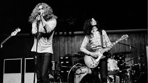
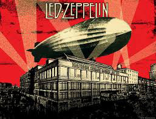

Favorite Artists At the Moment
Led Zeppelin
Led Zeppelin were an English rock band formed in London in 1968. Led Zeppelin signed a deal with Atlantic Records that afforded them considerable artistic freedom.Led Zeppelin are widely considered one of the most successful, innovative, and influential rock groups in history. They are one of the best-selling music artists in the history of audio recording; various sources estimate the group's record sales at 200 to 300 million units worldwide. Led Zeppelin did in the 70's what The Beatles did in the 60's and that is to make a widely known phenonenom that grabs the world's attention. Ever since I started to listen to Led Zeppelin, I have an insight into what music sounded like in that era and it fascinates me. I love every song I hear and am constantly impressed with what thier lyrics mean and how they come across.

Favorite Songs: